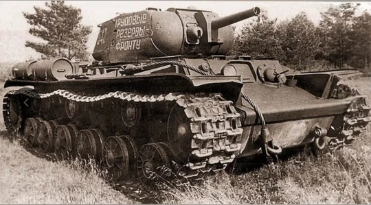
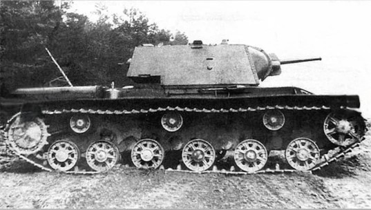
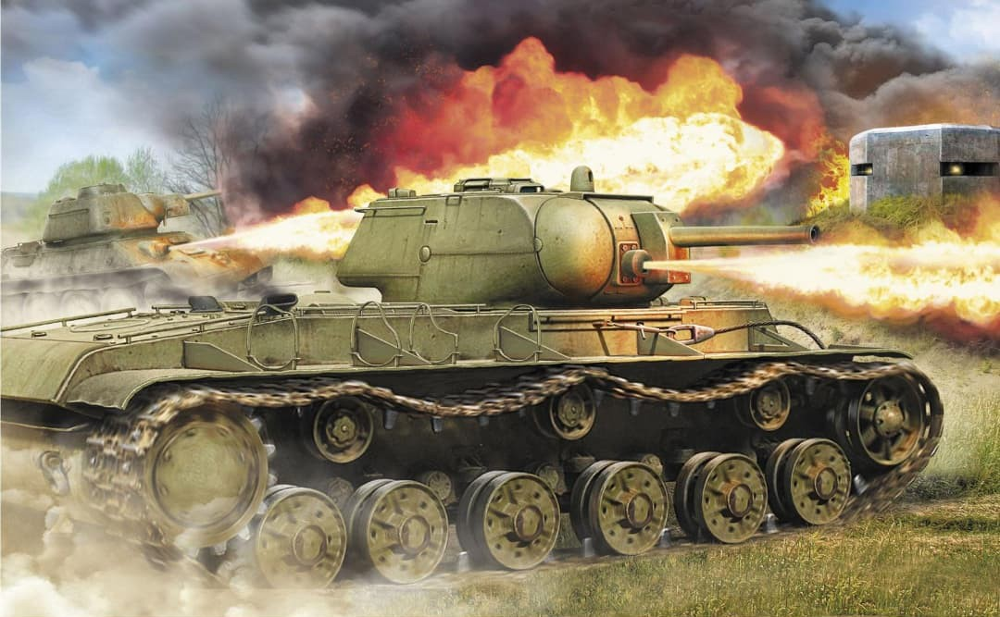

Le KV‑8 est une version lance‑flammes du char lourd KV‑1. Conçu pour l’assaut contre les fortifications, il remplace le canon de 76 mm par un 45 mm camouflé et intègre un lance‑flammes ATO‑41. Puissant, blindé et terrifiant psychologiquement, il est engagé dans des bataillons spécialisés de chars chimiques.


Le KV‑8 existe en plusieurs versions, adaptées aux besoins des unités lance‑flammes.
Ces chars sont regroupés dans des bataillons spécialisés appelés « bataillons de chars chimiques », destinés à l’assaut de bunkers, tranchées et fortifications lourdes.
